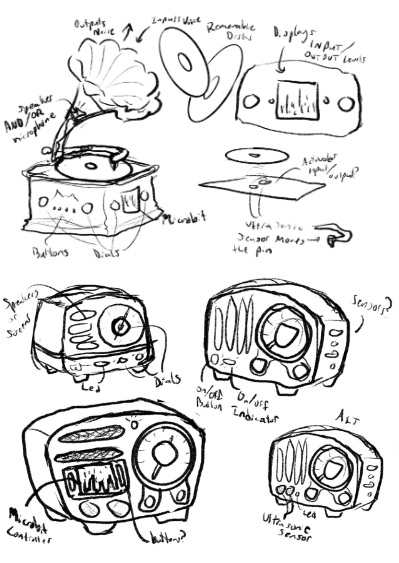
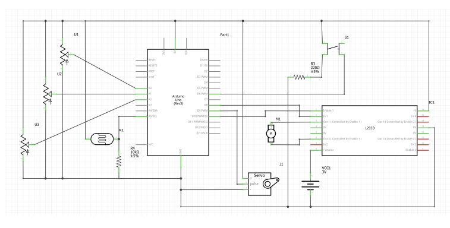
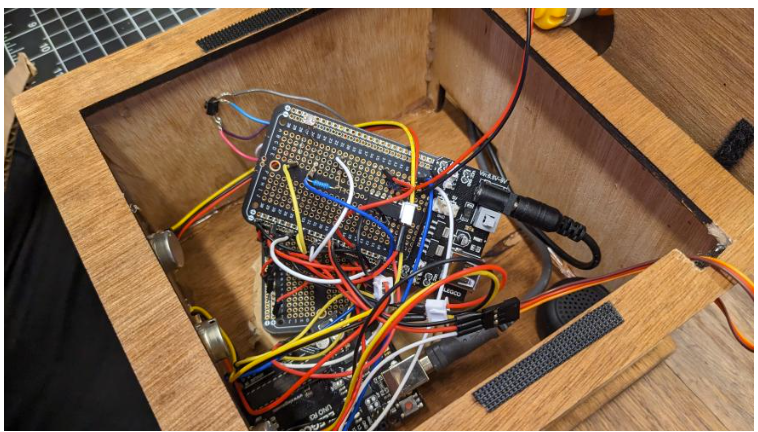
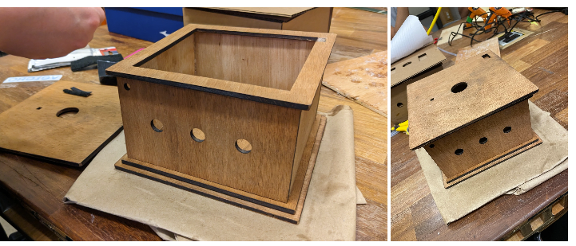

Above are two knobs that mimic the use of the potentiometers in the actual project.
My role in the group was the primary software developer and electronic engineer. With assistance from Skuladottir, I mainly worked on the more circuit, code-based, and testing components.
record boyz is composed of in-depth Arduino and Processing Code, wiring, motors, circuitry, and various fabrication methods like laser cutting and woodworking. The right and left-most potentiometers would sample wav files created by Skuladottir. The left held drum tracks and the right melodies. The middle potentiometer in the physical structure would alter the pitch and frequency of the two. The actual performance is more fluid than the above simulation.
First concepts of the project focused on how to integrate inputs and outputs to allow the user to seamlessly mix music while still having a nice, familiar appeal. Due to its elegant design and vintage appeal, the gramophone ended up being the inspiration for future developments.
 The final product had a total of 2 motors, 3 potentiometers, a speaker, 1 ultrasonic distance sensor, and 10 different drum tracks and 3 melody tracks all created in Ableton Live 11. In terms of code, there was a lot to implement. See here for more in depth documentation.
 The enclosure was created using a laser cutter and plywood after modeling in rhino - the first prototype was created with cardboard so changes could be made to the design.
Overview Sketch by Skuladottir
The code was implemented and tested, cardboard mockups of the disk and arm were developed to test how they could move with the added weight. After tests, the enclosure was stained, sanded, and constructed
Thank you to the BTU for letting us use their materials and laser cutter.
Various testing, soldering, fabrication, and repeated reconstruction and modification followed, eventually resulting in a cohesive final project.
Spring 2023